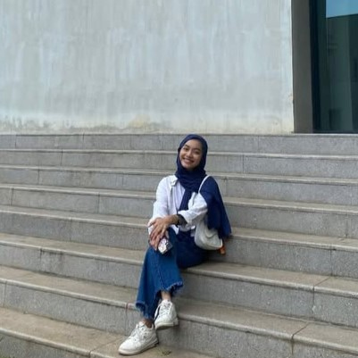
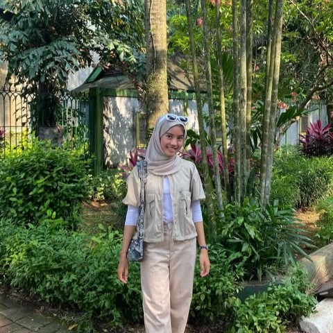

Team Member
Kelompok Mata Kuliah Struktur Data

Khahfiana Rosida

Salwa Saumi

Asmiranda Syaputri

Indra Saputra

Andre Saputra
"Website ini dibuat sebagai project mata kuliah Struktur Data untuk memvisualisasikan sistem rute KRL menggunakan metode graph. Di dalamnya terdapat teori dasar graph, studi kasus pencarian jalur tercepat, serta pemaparan topik."